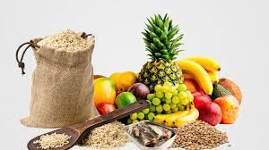
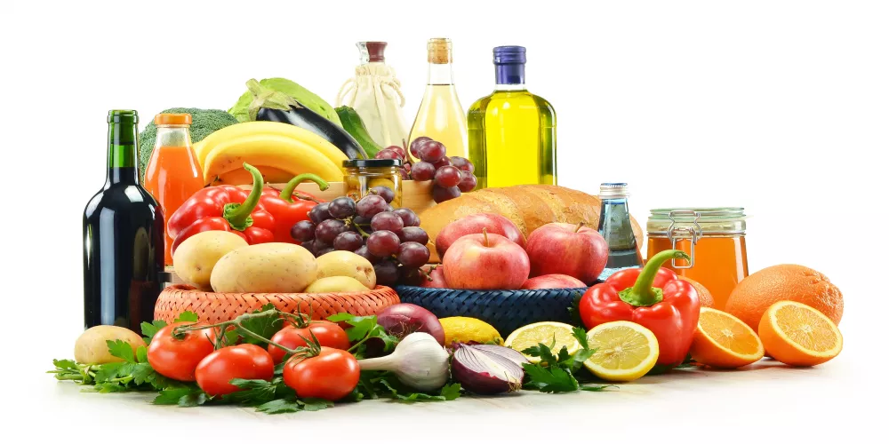
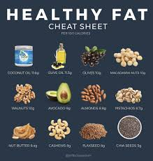
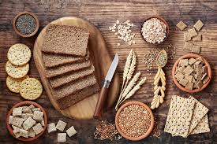

. Following a healthy diet helps prevent malnutrition in all its forms, as well as non-communicable diseases, including
diabetes, heart disease, stroke, and cancer.
. An unhealthy diet and lack of physical activity are among the leading global health risks.
Healthy dietary practices begin early in life – breastfeeding promotes healthy growth and improves cognitive
development, and it may have long-term health benefits such as reducing the risk of overweight, obesity, and
non-communicable diseases later in life.
. Energy intake (calories) should be balanced with energy expenditure. To avoid unhealthy weight gain, total fat intake
should not exceed 30% of total energy intake (1, 2, 3). Saturated fat intake should be less than 10% of total energy
intake, and trans fat intake should be less than 1% of total energy intake, with a shift in fat consumption away from
saturated fats and trans fats towards unsaturated fats (3), with the goal of eliminating industrially produced trans
fats (4, 5, 6).

Best Healthy Foods and Their Benefits
You can provide lists of the best healthy foods and the benefits of each type, such as:

fruit and vegetable
protein

fats

Whole Grains
Easy and Quick Recipes for Preparing Healthy Meals